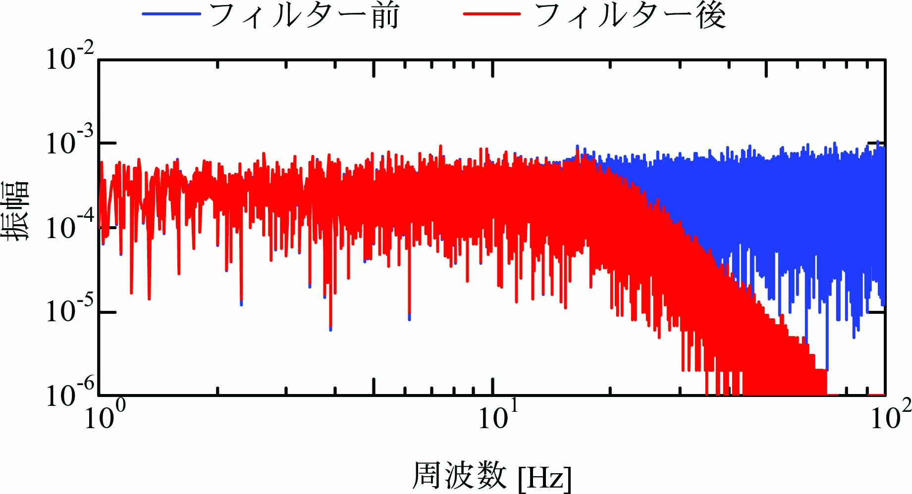

ランダム信号は広い範囲の周波数成分を含んでいるので、 運動制御システムにおいてランダム信号を入力とすると、 広い範囲周波数範囲の応答を確認することに重宝します。
C言語には0からRAND_MAXの範囲の疑似乱数を生成する関数(rand)があります。書式は下記となります。
int rand(void);
float x,y;
y=((float)rand()/RAND_MAX-0.5f)\(*\)x
とすることで、\(-0.5x\)から\(+0.5x\)の疑似乱数を浮動小数\(y\)としてランダム信号を生成できます。
下図は\(-0.5\)から\(+0.5\)の範囲で生成した１万個のランダム信号です。
下図はランダム信号の確立分布です。 ほぼ均等な確率で変位が発生していることを確認できます。
下図はランダム信号をFourie変換して作成された周波数分布です。 \(0\)～\(100\)[Hz]までほぼ均等に振幅が発生していることを確認できます。
モデル規範適応制御において、 振動数の高い成分は適応動作を遅くさせるか、 不安定化させることが懸念されます。 そこで、デジタルフィルターにより 20Hz以上の振動数成分を抑制します。 下図はランダム信号に遮断周波数20Hzの低域通過デジタルフィルターを使用し、 Fourie変換して作成された周波数分布です。 ランダム振動に対して20Hz以上の振動数成分が抑制されていることを確認できます。
